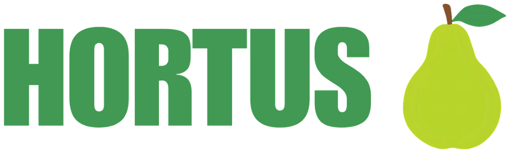

DIRETÓRIO HORTUS
Encontre uma horta.
Pesquise pelo que importa para você. Os exemplos marcados como demonstração são fictícios e não representam iniciativas reais.
Resultados da busca
Carregando hortas

Cadastrar hortaDIRETÓRIO HORTUS
Pesquise pelo que importa para você. Os exemplos marcados como demonstração são fictícios e não representam iniciativas reais.
Carregando hortas